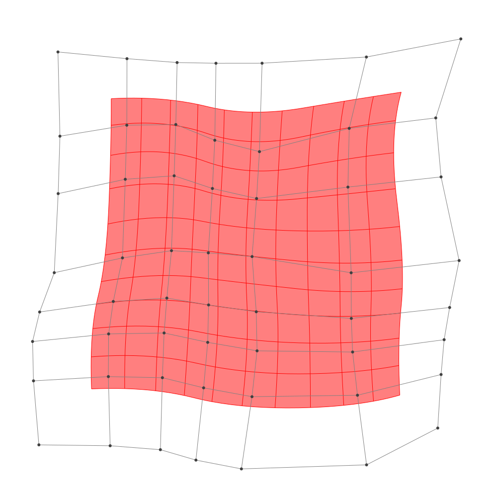
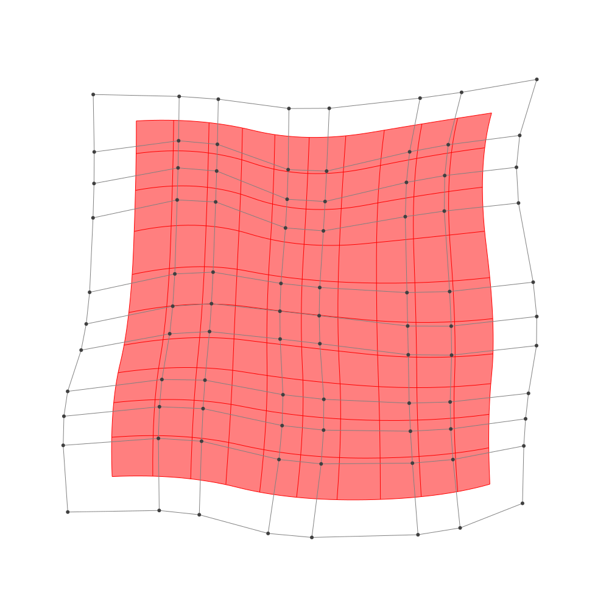

Refinement
BasicBSpline.refinement — FunctionRefinement of B-spline manifold with given B-spline spaces.
julia> p = 2 # degree of polynomial2julia> k = KnotVector(1:8) # knot vectorKnotVector([1.0, 2.0, 3.0, 4.0, 5.0, 6.0, 7.0, 8.0])julia> P = BSplineSpace{p}(k) # B-spline spaceBSplineSpace{2, Float64}(KnotVector([1.0, 2.0, 3.0, 4.0, 5.0, 6.0, 7.0, 8.0]))julia> rand_a = [SVector(rand(), rand()) for i in 1:dim(P), j in 1:dim(P)]5×5 Matrix{StaticArrays.SVector{2, Float64}}: [0.282584, 0.549346] [0.101479, 0.695219] … [0.666097, 0.454636] [0.488752, 0.521495] [0.492931, 0.933029] [0.802748, 0.24649] [0.0775981, 0.0564944] [0.505439, 0.487337] [0.540041, 0.214242] [0.875486, 0.146756] [0.570734, 0.481867] [0.872185, 0.352753] [0.307736, 0.887185] [0.41982, 0.682831] [0.772366, 0.717179]julia> a = [SVector(2*i-6.5, 2*j-6.5) for i in 1:dim(P), j in 1:dim(P)] + rand_a # random5×5 Matrix{StaticArrays.SVector{2, Float64}}: [-4.21742, -3.95065] [-4.39852, -1.80478] … [-3.8339, 3.95464] [-2.01125, -3.9785] [-2.00707, -1.56697] [-1.69725, 3.74649] [-0.422402, -4.44351] [0.00543882, -2.01266] [0.0400407, 3.71424] [2.37549, -4.35324] [2.07073, -2.01813] [2.37218, 3.85275] [3.80774, -3.61282] [3.91982, -1.81717] [4.27237, 4.21718]julia> M = BSplineManifold(a,(P,P)) # Define B-spline manifoldBSplineManifold{2, (2, 2), StaticArrays.SVector{2, Float64}, Tuple{BSplineSpace{2, Float64}, BSplineSpace{2, Float64}}}((BSplineSpace{2, Float64}(KnotVector([1.0, 2.0, 3.0, 4.0, 5.0, 6.0, 7.0, 8.0])), BSplineSpace{2, Float64}(KnotVector([1.0, 2.0, 3.0, 4.0, 5.0, 6.0, 7.0, 8.0]))), StaticArrays.SVector{2, Float64}[[-4.217415732875914, -3.950654267006018] [-4.398521042072255, -1.8047810821886001] … [-3.7873514956896654, 1.96105077348138] [-3.8339025037740417, 3.9546356667756983]; [-2.0112475269762644, -3.978504522134008] [-2.0070687114475803, -1.5669712876788389] … [-1.7285563636165422, 2.3973694672565546] [-1.6972516650987215, 3.7464900418264717]; … ; [2.37548647920054, -4.353243747467879] [2.070734285678062, -2.0181333737303873] … [1.9655840167052525, 2.1639453542803913] [2.372184689293249, 3.8527530624319772]; [3.8077358058945237, -3.6128154325401436] [3.919819622736145, -1.8171688962836035] … [3.678794712139592, 2.3466782547308758] [4.272366237912791, 4.217179429416525]])
h-refinemnet
Insert additional knots to knot vector.
julia> k₊=(KnotVector(3.3,4.2),KnotVector(3.8,3.2,5.3)) # additional knotvectors(KnotVector([3.3, 4.2]), KnotVector([3.2, 3.8, 5.3]))julia> M_h = refinement(M,k₊=k₊) # refinement of B-spline manifoldBSplineManifold{2, (2, 2), StaticArrays.SVector{2, Float64}, Tuple{BSplineSpace{2, Float64}, BSplineSpace{2, Float64}}}((BSplineSpace{2, Float64}(KnotVector([1.0, 2.0, 3.0, 3.3, 4.0, 4.2, 5.0, 6.0, 7.0, 8.0])), BSplineSpace{2, Float64}(KnotVector([1.0, 2.0, 3.0, 3.2, 3.8, 4.0, 5.0, 5.3, 6.0, 7.0, 8.0]))), StaticArrays.SVector{2, Float64}[[-4.217415732875914, -3.950654267006018] [-4.326078918393718, -2.663130356115567] … [-3.794334146902322, 2.2600885074755275] [-3.8339025037740417, 3.9546356667756983]; [-2.7834063990411417, -3.9687569328392116] [-2.8198087759161865, -2.5776256025900377] … [-2.448526379661078, 2.480860387353762] [-2.445079458635084, 3.819341010558701]; … ; [2.37548647920054, -4.353243747467879] [2.1926351630870533, -2.9521775232253837] … [2.026574117593452, 2.4172665105031292] [2.372184689293249, 3.8527530624319772]; [3.8077358058945237, -3.6128154325401436] [3.874986095999496, -2.5354275107862194] … [3.7678304410055716, 2.627253430933723] [4.272366237912791, 4.217179429416525]])julia> save_png("2dim_h-refinement.png", M_h) # save image

Note that this shape and the last shape are identical.
p-refinemnet
Increase the polynomial degree of B-spline manifold.
julia> p₊=(1,2) # additional degrees(1, 2)julia> M_p = refinement(M,p₊=p₊) # refinement of B-spline manifoldBSplineManifold{2, (3, 4), StaticArrays.SVector{2, Float64}, Tuple{BSplineSpace{3, Float64}, BSplineSpace{4, Float64}}}((BSplineSpace{3, Float64}(KnotVector([1.0, 2.0, 3.0, 3.0, 4.0, 4.0, 5.0, 5.0, 6.0, 6.0, 7.0, 8.0])), BSplineSpace{4, Float64}(KnotVector([1.0, 2.0, 3.0, 3.0, 3.0, 4.0, 4.0, 4.0, 5.0, 5.0, 5.0, 6.0, 6.0, 6.0, 7.0, 8.0]))), StaticArrays.SVector{2, Float64}[[-3.8872771873281815, -3.4077585112547557] [-3.9623894981992662, -2.312683581376234] … [-3.452612737923481, 2.505314099153972] [-3.469400266415486, 3.448401185907431]; [-2.385617695940911, -3.382048673067124] [-2.3989686319036543, -2.198420393309352] … [-2.0671066987743654, 2.6887825085500214] [-2.0579423250656386, 3.41704815572868]; … ; [2.5553748190340886, -3.6685390947739234] [2.437735056469858, -2.5459392276952566] … [2.360559752974025, 2.6241733258322877] [2.5794409937001235, 3.483718302119253]; [3.579680371890761, -3.264830857735592] [3.6009859461145632, -2.3220522698172426] … [3.5338620254611186, 2.776277503888288] [3.815066883915618, 3.696386969019941]])julia> save_png("2dim_p-refinement.png", M_p) # save image

Note that this shape and the last shape are identical.